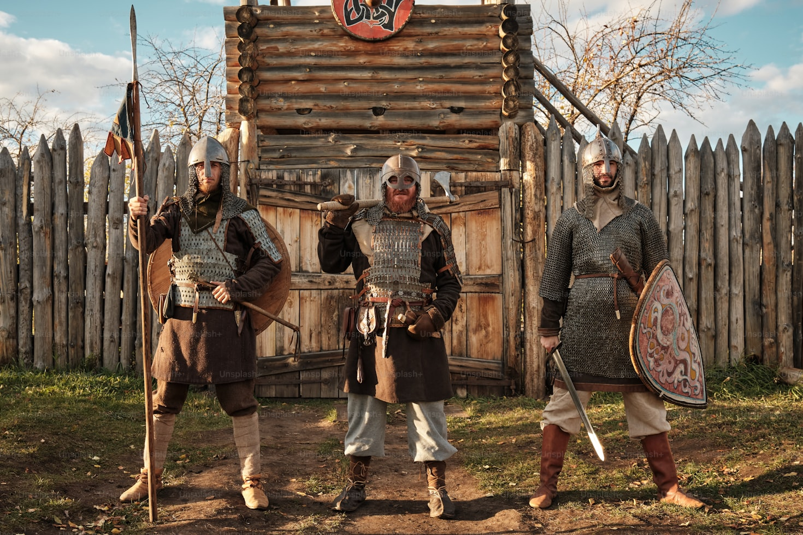
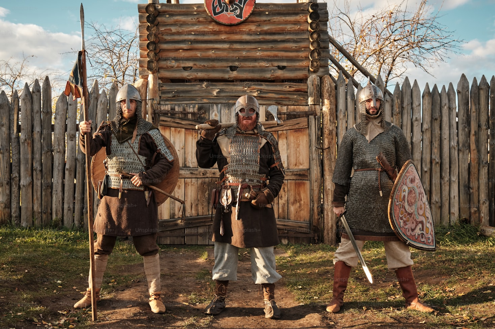

Quem foram os Vikings?
Os vikings foram povos nórdicos da Escandinávia conhecidos por suas expedições marítimas, comércio, e conquistas entre os séculos VIII e XI.
Os vikings foram povos nórdicos da Escandinávia conhecidos por suas expedições marítimas, comércio, e conquistas entre os séculos VIII e XI.
